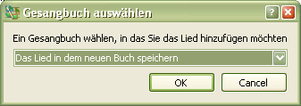

3.3 Lied kopieren
SoftProjector ermöglicht das Lied in ein neues oder in ein bereits erstelltes Gesangbuch zu kopieren.
Für Lied-Kopieren:
Abkürz.: Crtl+C

Falls Sie nicht
möchten, dieses Lied in ein bereits erstelltes Gesangbuch zu kopieren, wählen Sie "Ein neues Gesangbuch erstellen".
Mehr hier.
Wählen Sie ein Gesangbuch und ein Lied.
Dann wählen Sie "Ändern" und Ändern. Nach dem Ändern drücken Sie
"Speichern"